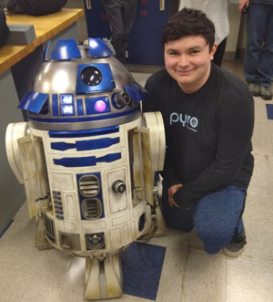

Clay Craig's Portfolio for AENG 110 Class |
Home Print Project Photo Project Video Project |
My name is Clay Craig. I am a student at Millersville University and I am majoring in Technology and Engineering Education. I am from around the area just located in Conestoga Pennsylvania, which is about 15 to 20 minutes away from the school. I haven't had much involvemnt within the school year yet, if counting involvement as in clubs or other activities. The only things I have done so far are classes which I am so far enjoying. I am enjoying Millersville because of all the new people I have gotten to meet and all the friends I have gotten to make. I am going to try to get more involved within the next few years by joining some clubs like TEECA, Robotics, or Rock Climbing clubs. I've been out of school for two years since I graduated back in 2021, so im just trying to ease into things before I try to pack my schedule. |

Student at Millersville University |
| Home Print Project Photo Project Video Project |
© 2023 Clay Craig |